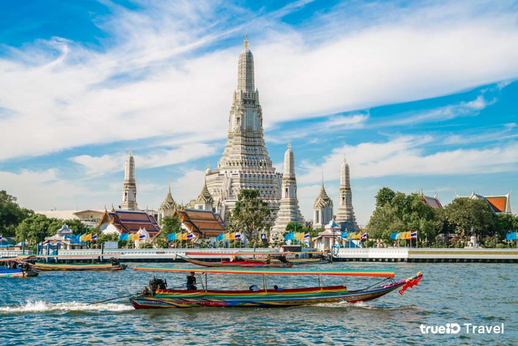
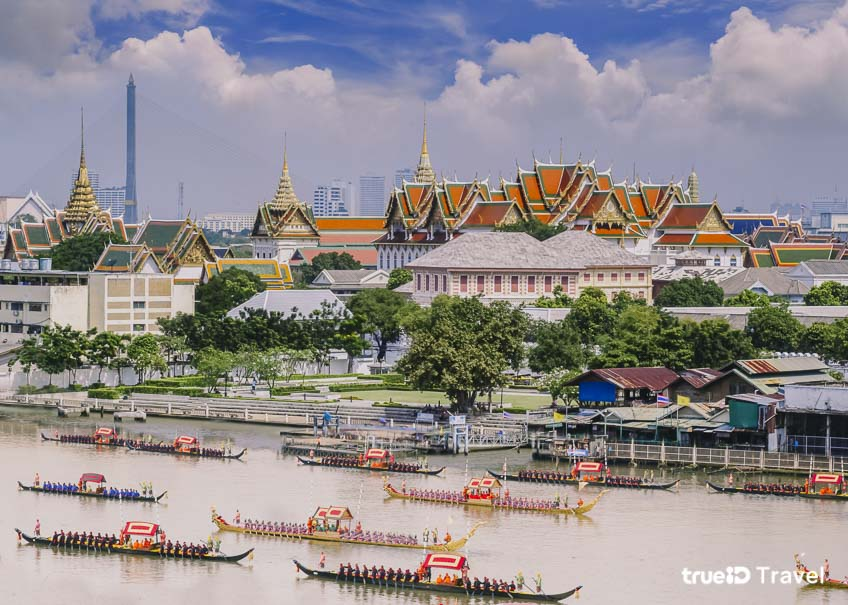

|
ประวัติ กรุงเทพมหานครในสมัยกรุงศรีอยุธยานั่น กรุงเทพฯ ยังเป็นเพียงเมืองการค้าขนาดเล็ก อยู่ที่ปากแม่น้ำเจ้าพระยา แต่ต่อมาหลังจากการสถาปนาเมืองหลวงใหม่ ทำให้กรุงเทพฯ เป็นที่ตั้งของ 2 เมืองหลวงที่สำคัญก็คือ กรุงธนบุรี และ กรุงรัตนโกสินทร์ ค่ะ ทำให้กรุงเทพฯ เติบโต และกลายเป็นหัวใจสำคัญของประเทศ หลังสิ้นรัชสมัยของ สมเด็จพระเจ้าตากสิน หรือ พระเจ้ากรุงธนบุรี ได้มีการสถาปนา กรุงรัตนโกสินทร์ ขึ้นเป็น เมืองหลวงของประเทศไทย ในวันที่ 21 เมษายน พ.ศ.2325 ในรัชสมัยของ พระบาทสมเด็จพระพุทธยอดฟ้าจุฬาโลก ซึ่งปราบดาภิเษกเป็นปฐมกษัตริย์แห่งราชวงศ์จักรี เนื่องจาก กรุงธนบุรี เมืองหลวงเดิม มีความคับแคบ และไม่ต้องด้วยหลักพิชัยสงคราม ทำให้ กรุงเทพมหานคร กลายเป็นเมืองหลวงมาจนถึงปัจจุบันอ่านเพิ่มเติม |
|---|---|
|  | เขตบางกะปิที่มาของชื่อ "บางกะปิ" นั้นมีข้อสันนิษฐานมากมาย ตั้งแต่คำว่า "กบิ" หรือ "กบี่" ที่หมายถึง ลิง เพราะพื้นที่แถบนี้ในอดีตเคยเป็นป่าทึบ มีลิงอาศัยอยู่เป็นจำนวนมาก (ซึ่งสัญลักษณ์ของเขตก็เป็นรูปหนุมานด้วย) หรือมาจาก "กะปิ" ซึ่งเป็นเครื่องปรุงอาหาร เพราะพื้นที่นี้แต่เดิมอุดมสมบูรณ์ด้วยกุ้งเล็ก ๆ มากมาย ประชาชนจึงนิยมนำมาทำกะปิกันมาก บ้างว่า มาจากชื่อหมวก "กะปิเยาะห์" ของชาวมุสลิม เนื่องจากพื้นที่นี้มีชาวมุสลิมอาศัยอยู่มาก ซึ่งการแต่งกายของชาวมุสลิมส่วนใหญ่จะสวมหมวกคลุมหัวอ่านเพิ่มเติม |
|  | การปกครองตามพระราชบัญญัติระเบียบบริหารราชการกรุงเทพมหานคร พ.ศ. 2528 กำหนดให้กรุงเทพมหานครมีสถานะเป็นนิติบุคคล และองค์กรปกครองส่วนท้องถิ่นรูปแบบพิเศษ มีผู้ว่าราชการกรุงเทพมหานคร มาจากการเลือกตั้งโดยตรง และเป็นผู้รับผิดชอบในการบริหารงาน อยู่ในตำแหน่งตามวาระคราวละสี่ปี นับแต่วันเลือกตั้ง แต่ต้องดำรงตำแหน่งไม่เกิน 2 วาระติดต่อกัน โดยมีฝ่ายนิติบัญญัติ คือสภากรุงเทพมหานคร ที่ได้รับการเลือกตั้งจากชาวกรุงเทพมหานครเช่นกัน ดำเนินงานร่วมด้วย ระหว่างปี 2560 ถึง 2565 ซึ่งเป็นช่วงที่ พลตำรวจเอก อัศวิน ขวัญเมือง เป็นผู้ว่าราชการกรุงเทพมหานครนั้น พบว่ากรุงเทพมหานครมีงบประมาณรวมทั้งสิ้น 4.9 แสนล้านบาท โดยในปีนั้น กรุงเทพมหานครยังได้รับงบประมาณจากรัฐบาลปี 2566 อีกจำนวน 22,284 ล้านบาทอ่านเพิ่มเติม |